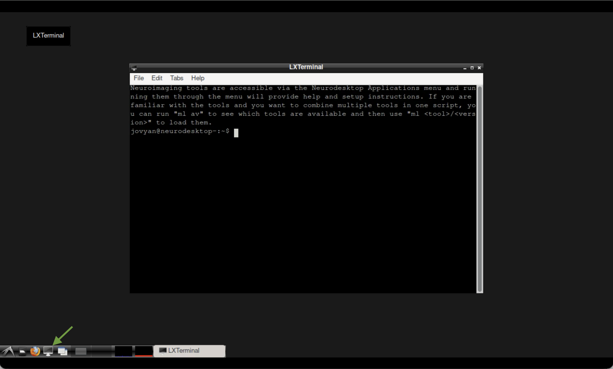
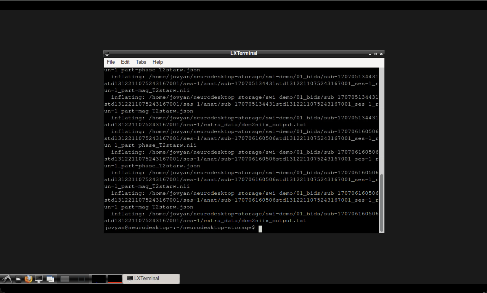
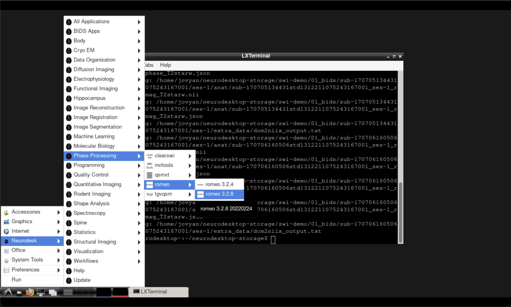
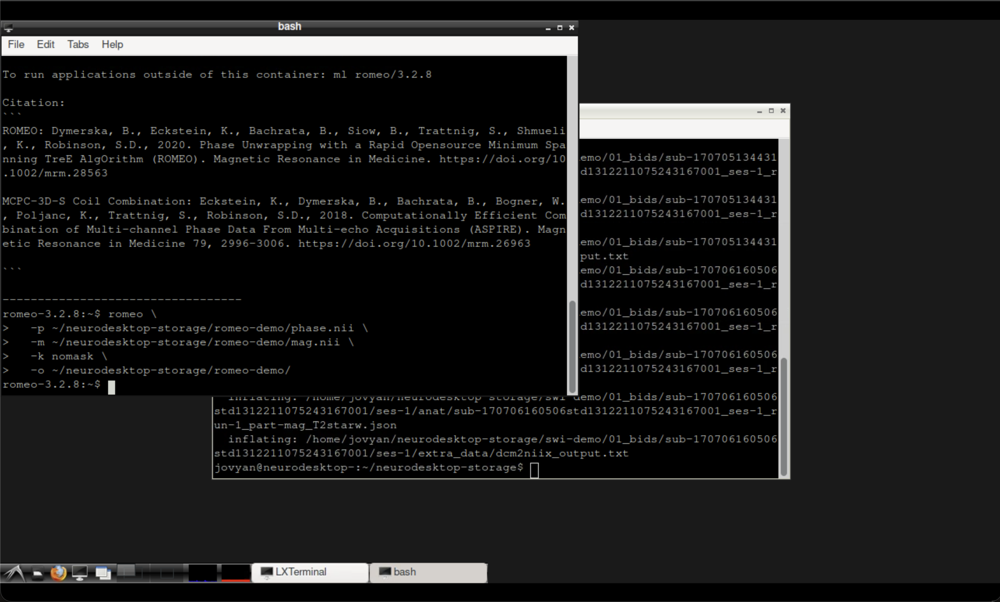
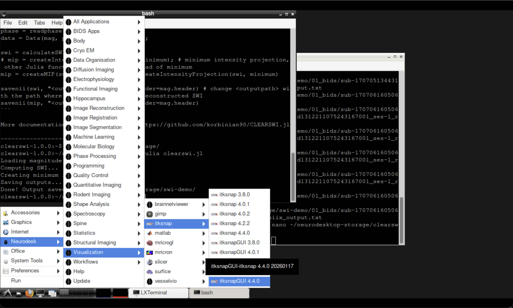
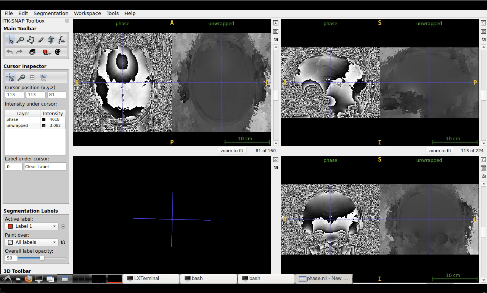

MRI Phase Unwrapping with ROMEO#
Author: Steffen Bollmann, Michèle Masson-Trottier
The University of Queensland
Date: 16/03/2026
License:
Purpose#
MRI phase data are inherently wrapped — phase values outside the range \([-\pi, \pi]\) “wrap around”, creating artificial discontinuities. Phase unwrapping recovers the true, continuous phase signal, which is essential for downstream analyses such as quantitative susceptibility mapping (QSM) and field mapping.
This tutorial demonstrates how to:
Download a demo dataset with magnitude and phase images
Prepare the data for unwrapping
Run ROMEO (Robust phase unwrapping) to recover continuous phase
Learning Objectives
By the end of this tutorial you will be able to:
Explain why MRI phase data need unwrapping
Use ROMEO for robust, magnitude-guided phase unwrapping
Interpret the unwrapped phase output
Citation and Resources#
Tools used in this workflow#
- ROMEO
Dymerska, B., Eckstein, K., et al. (2021). Phase unwrapping with a rapid opensource minimum spanning tree algorithm (ROMEO). Magnetic Resonance in Medicine, 85(4), 2294–2308. https://doi.org/10.1002/mrm.28563
Educational resources#
Prerequisites#
Before you begin
Make sure you have access to a running Neurodesk instance. See Getting Set Up with Neurodesk for instructions.
A running Neurodesk environment
Familiarity with basic terminal commands
No additional installation required — ROMEO is pre-installed in Neurodesk
Load software tools and download demo data#
We use the same demo dataset as the SWI tutorial. Open a terminal in Neurodesktop and run the following commands to download the data, then copy and prepare the magnitude and phase files for ROMEO.
Tip
To paste in Neurodesktop, best to use the right click on your mouse!

The terminal in Neurodesktop.pip install osfclient
cd ~/neurodesktop-storage/
osf -p ru43c fetch -f 01_bids.zip ~/neurodesktop-storage/swi-demo/01_bids.zip
unzip -o ~/neurodesktop-storage/swi-demo/01_bids.zip -d ~/neurodesktop-storage/swi-demo/
Now copy the magnitude and phase files into a dedicated working directory:
mkdir -p ~/neurodesktop-storage/romeo-demo/
cp ~/neurodesktop-storage/swi-demo/01_bids/sub-170705134431std1312211075243167001/ses-1/anat/sub-170705134431std1312211075243167001_ses-1_run-1_part-phase_T2starw.nii \
~/neurodesktop-storage/romeo-demo/phase.nii
cp ~/neurodesktop-storage/swi-demo/01_bids/sub-170705134431std1312211075243167001/ses-1/anat/sub-170705134431std1312211075243167001_ses-1_run-1_part-mag_T2starw.nii \
~/neurodesktop-storage/romeo-demo/mag.nii
Note
The files are already uncompressed .nii format, which is what ROMEO expects. No need to gunzip.

Terminal output after downloading and preparing the data.Run ROMEO for phase unwrapping#

Fig. 3 Opening ROMEO from the Neurodesk application menu.#
Open the ROMEO tool from the Neurodesk application menu, then run the following command in the ROMEO container terminal:
Note
The -k nomask flag disables brain masking so all voxels are unwrapped. For most applications you would want to use a brain mask — see the ROMEO documentation for options.
romeo \
-p ~/neurodesktop-storage/romeo-demo/phase.nii \
-m ~/neurodesktop-storage/romeo-demo/mag.nii \
-k nomask \
-o ~/neurodesktop-storage/romeo-demo/

Terminal output after running ROMEO.Inspect the results#
The unwrapped phase image is saved in the output directory. You can verify it was created in the LXTerminal:
ls ~/neurodesktop-storage/romeo-demo/

Fig. 4 Opening ITK-SNAP from the Neurodesk Visualisation menu.#
Open ITK-SNAP from the Neurodesk Visualisation menu and load the original wrapped phase (phase.nii) alongside the unwrapped output to compare.
Tip
Look for the removal of the sharp \(2\pi\) jumps that were visible in the wrapped phase. The unwrapped phase should show smooth, continuous variation across the brain.

Comparison of wrapped (left) and unwrapped (right) phase in ITK-SNAP.Summary#
In this tutorial you:
Downloaded and prepared magnitude and phase MRI data
Used ROMEO to perform robust phase unwrapping
Compared the wrapped and unwrapped phase images
See also
SWI tutorial — for susceptibility-weighted imaging using the same dataset
QSM tutorial — for quantitative susceptibility mapping with QSMxT